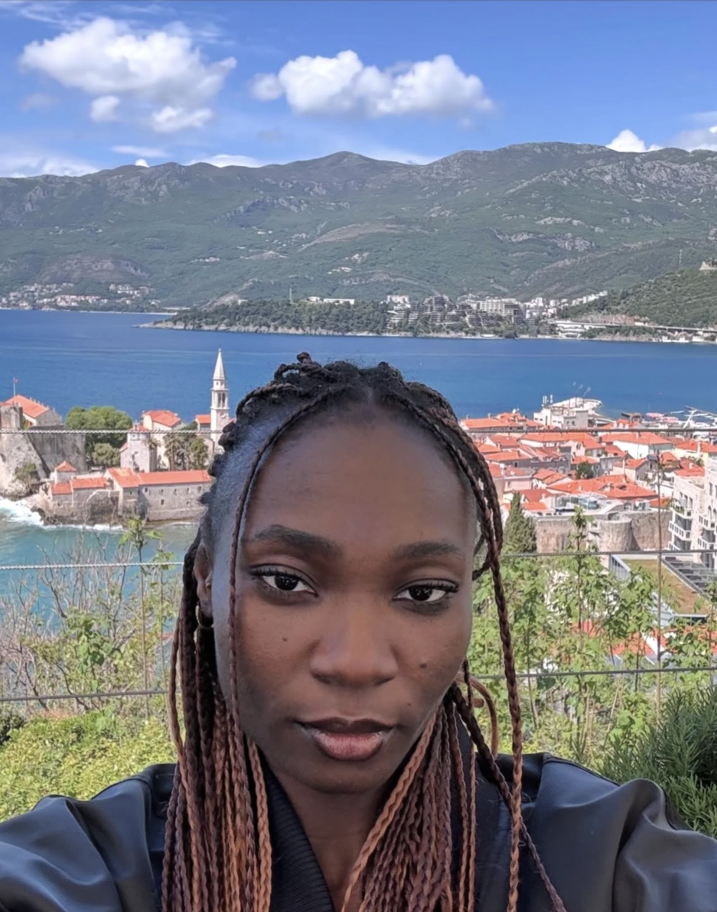

I grew up watching brilliant young minds in Nigeria with unlimited potential, yet they had limited access to the right guidance, mentorship, and opportunities.
Year after year, I saw the same pattern: talented students excelling in classrooms yet struggling to bridge the gap between academic knowledge and real-world readiness. They knew what they wanted to achieve, but lacked the roadmap to get there. They had the desire to succeed, but didn't know which doors to knock on. It broke my heart then, and it still drives me today.
Moving to the UK opened my eyes to a deeper truth about the real nature of the skills gap. It wasn't about intelligence or capability. The real issue was access. Young Nigerians deserve the same global exposure, career mentorship, and skill development opportunities as their peers anywhere in the world. They deserve more than just hope; they deserve a proven path to economic independence.
That's why I founded Wissen-Haus.
I started this foundation because I refused to accept that your zip code should limit your potential and determine your destiny. I've mentored over 50 young people, watching them grow into confident professionals who now lead their own journeys with belief in themselves and their abilities.
Every member of the Wissen-Haus community is proof that when young people are equipped with the right skills, guidance, and belief in themselves, they don't just succeed—they transform their entire communities.
This is just the beginning.